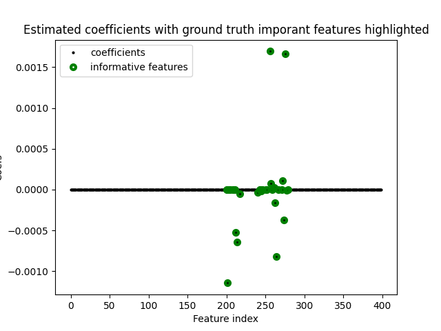

Note
Click here to download the full example code
Logistic Sparse Group Lasso for grouped sparse signals¶
Estimates a Sparse Group Lasso logistic regression model on a simulated sparse signal. The estimated important features are compared with the ground-truth.
Out:
Indices of ground-truth informative features:
[200 201 203 205 208 209 211 212 214 217 240 243 244 245 246 251 252 256
257 259 261 262 264 267 271 272 274 276 277 279]
Indices of non-zero estimated coefs:
[201 212 214 217 240 245 256 257 261 262 264 272 274 276 277]
import numpy as np
from matplotlib import pyplot as plt
from groupyr import LogisticSGLCV
from groupyr.datasets import make_group_classification
X, y, groups, idx = make_group_classification(
n_samples=100,
n_groups=20,
n_informative_groups=3,
n_features_per_group=20,
n_informative_per_group=10,
n_redundant_per_group=0,
n_repeated_per_group=0,
n_classes=2,
scale=100,
useful_indices=True,
random_state=1729,
)
_, n_features = X.shape
model = LogisticSGLCV(
groups=groups, l1_ratio=[0.80, 0.90], n_alphas=40, tol=1e-3, eps=1e-2, cv=3
).fit(X, y)
plt.plot(
np.arange(n_features),
model.coef_,
marker="o",
mfc="black",
mec="none",
ms=3,
mew=0,
ls="",
label="coefficients",
)
plt.plot(
np.arange(n_features)[idx],
model.coef_[idx],
marker="o",
mfc="none",
mec="green",
ms=5,
mew=3,
ls="",
label="informative features",
)
plt.title("Estimated coefficients with ground truth imporant features highlighted")
plt.legend(loc="best")
plt.xlabel("Feature index")
plt.ylabel("Coefs")
plt.show()
print("Indices of ground-truth informative features:")
print(np.where(idx)[0])
print("Indices of non-zero estimated coefs:")
print(model.chosen_features_)
Total running time of the script: ( 0 minutes 44.365 seconds)